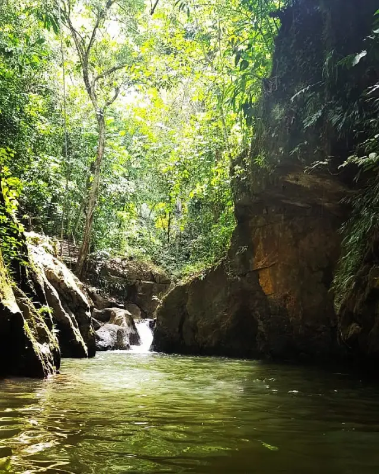
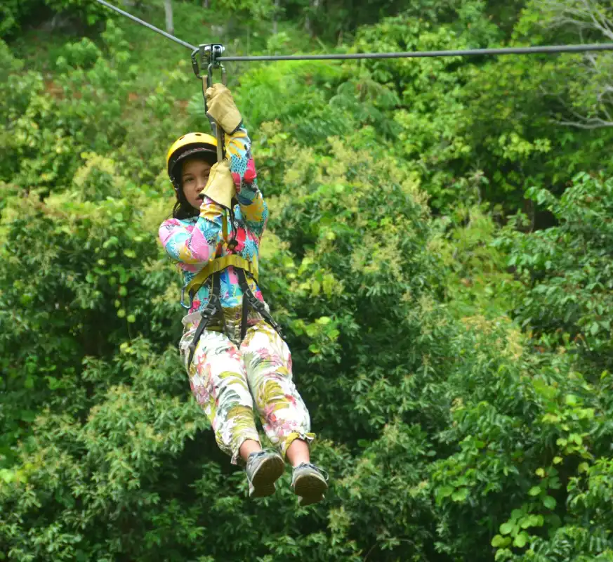
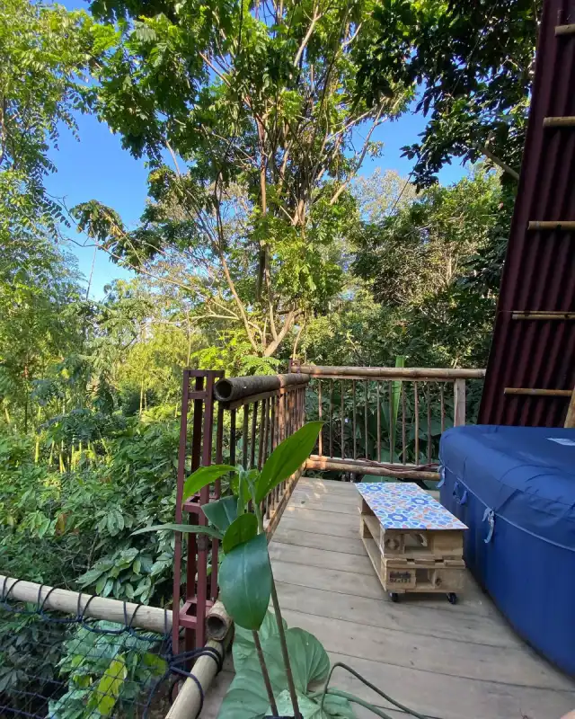
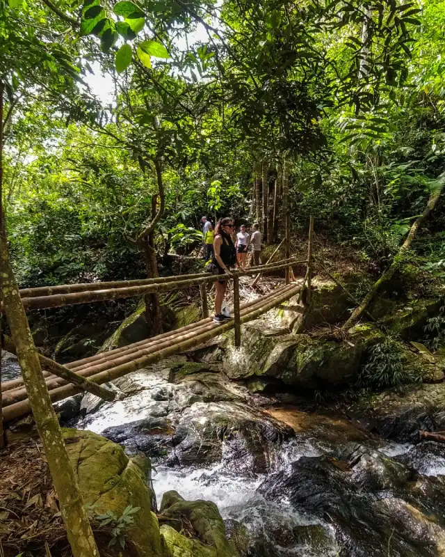

Naturaleza, historia y aventura
La Ciudad Perdida de Falan es un conjunto de ruinas del siglo XVII que pertenecían a una ciudadela española construida junto a las Reales Minas de Santa Ana durante la época colonial. Estas minas, que recibían su nombre por ser propiedad directa del rey de España y donde se extraían oro y plata, fueron entregadas en concesión a los ingleses tras la guerra de independencia por orden del General Bolívar.
En este lugar, de gran importancia histórica, trabajaron o pasaron por allí destacadas personalidades de la historia colombiana como José Celestino Mutis, Francisco José de Caldas, Alexander von Humboldt y Simón Bolívar, entre otros. Aunque la mayor parte de las estructuras de esta ciudad minera se destinaron hace más de un siglo a la venta de ladrillos en las poblaciones cercanas, aún se conservan túneles, murallas y bodegas de piedra que dan testimonio de su pasado en la selva.



